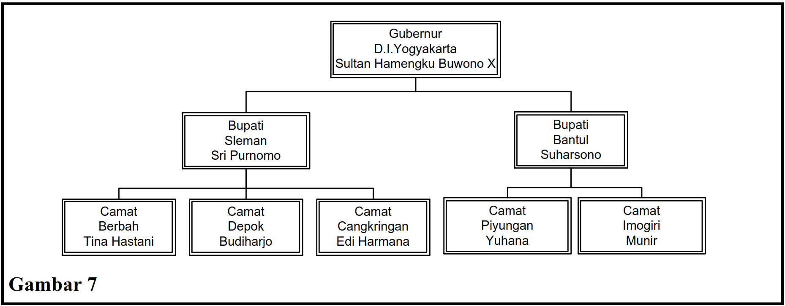
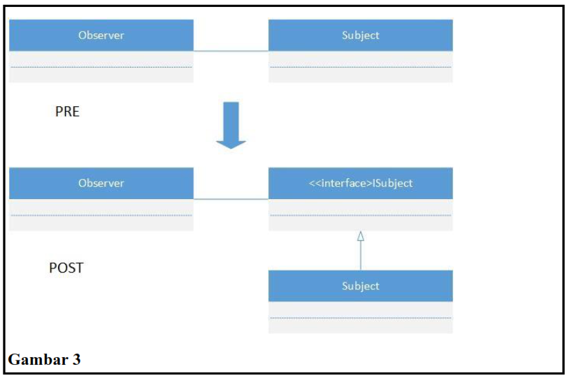
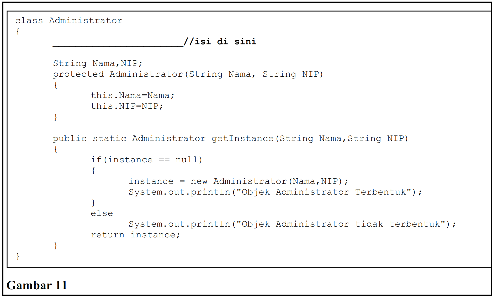
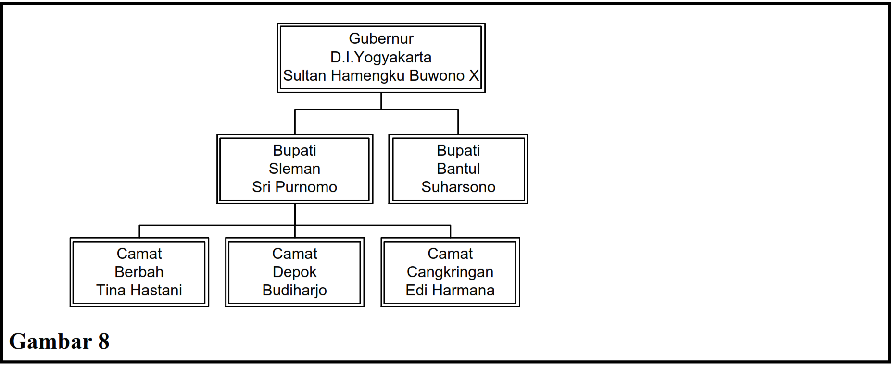
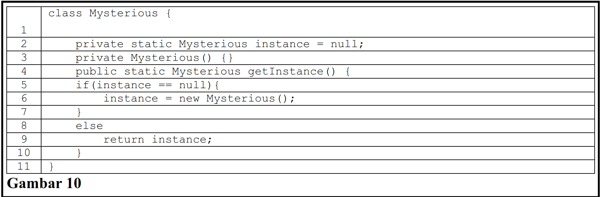
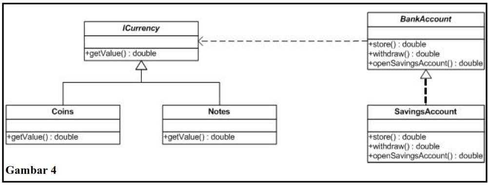
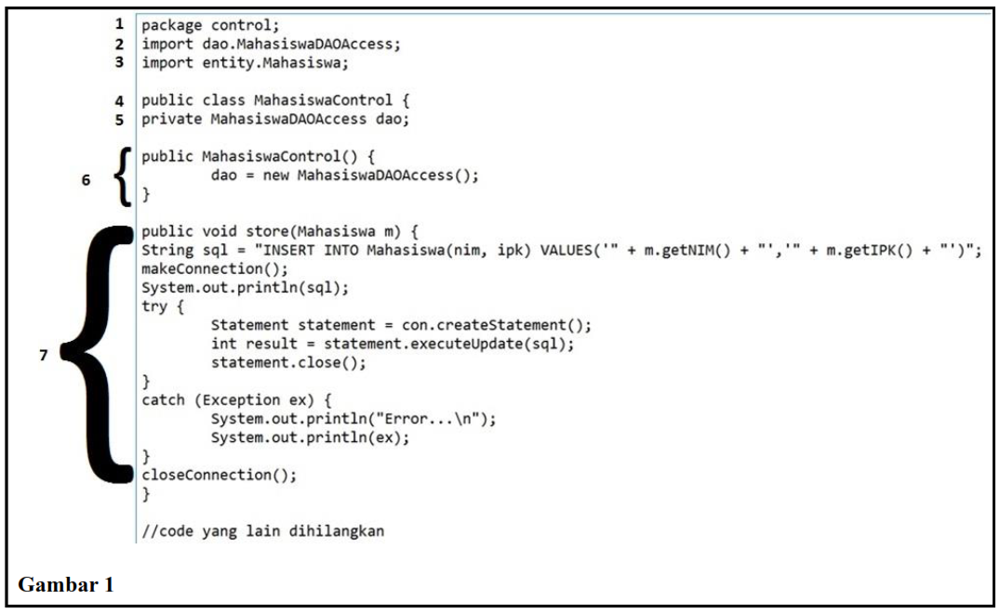

Kuis UAS PBO Genap 25/26
Mata Kuliah: Pemrograman Berorientasi Objek • Jumlah soal: 60 MAAF KALAU SOALNYA DUPLIKASI
Pembuatan hirarki seperti pada Gambar 7 dapat diselesaikan menggunakan pattern:

Di bawah ini termasuk dalam tipe Creational Pattern, yaitu:
Jawaban bisa lebih dari satu.
Gambar 3 berikut ini menunjukkan penerapan dari Dependency Inversion Principle.

Single Responsibility Principle dan Interface Segregation Principle pada prinsipnya pattern yang digunakan untuk menurunkan kohesivitas:
Berikut ini yang termasuk di dalam elemen dari design pattern:
Pilih semua elemen yang benar.
Lihat Gambar 6. Dibutuhkan adanya atribut bertipe Collection pada kelas Composite untuk menampung objek-objek bertipe Component.

Lihat Gambar 11. Untuk memastikan bahwa hanya boleh dibuat 1 objek dari kelas
Administrator, maka code yang hilang pada gambar tersebut diisi dengan:

Menciptakan sebuah instance dari beberapa kemungkinan kelas turunan tergantung pada data inputan yang tersedia merupakan pengertian dari pattern:
Lihat Gambar 5. Untuk menerapkan prinsip Liskov's Substitution Principle, maka
tipe parameter amt pada fungsi store (baris 18 dan 35) adalah:

Isikan dengan pasangan yang sesuai (pilih prinsip yang tepat untuk tiap pernyataan):
1. Clients should not be forced to depend upon interfaces yang tidak mereka gunakan. Interface harus dibuat minimal sesuai dengan kebutuhan kelas.
2. Sebuah fungsi yang menggunakan referensi sebuah kelas induk harus dapat digunakan juga oleh objek yang bertipe kelas turunan dari kelas induk tersebut.
3. Sebuah fungsionalitas baru ditambahkan dengan membuat kelas, method atau field baru, bukan menggantikan kode yang sudah teruji.
Apabila didefinisikan bahwa sebuah operasi yang bisa dikenakan atas tabungan adalah
membuka tabungan, menyimpan uang, dan menarik uang, maka interface
BankAccount pada Gambar 5 sudah memenuhi prinsip:
Berikut ini merupakan pernyataan yang BENAR tentang pattern pada Gambar 3:
Sebuah kampus ingin membuat program untuk memonitor IPK mahasiswa. Jika terdapat perubahan pada IPK mahasiswa, maka dosen pembimbing dan orang tua/wali mahasiswa akan diberi notifikasi. Untuk memecahkan permasalahan ini dapat menggunakan solusi design pattern. Dimanakah terdapat atribut bertipe Collection untuk menampung kelas-kelas Observer?
Jawaban bisa lebih dari satu.
(LIHAT GAMBAR 8).
Potongan main program:
PejabatTinggi Gub = new PejabatTinggi("D.I.Yogyakarta","Gubernur","Sultan Hamengku Buwono X");
PejabatTinggi B = new PejabatTinggi("Bantul","Bupati","Suharsono");
PejabatTinggi S = new PejabatTinggi("Sleman","Bupati","Sri Purnomo");
PejabatRendah Bh = new PejabatRendah("Berbah","Camat","Tina Hastani");
PejabatRendah C = new PejabatRendah("Cangkringan","Camat","Edi Harmana");
PejabatRendah D = new PejabatRendah("Depok","Camat","Budiharjo");
Untuk membuat hirarki seperti Gambar 8 code main program yang BENAR adalah:

Select one or more:
Pilih semua baris kode yang membentuk hirarki seperti Gambar 8.
Di bawah ini yang merupakan tipe-tipe pattern:
Pilih semua tipe pattern yang benar.
Berikut ini merupakan pernyataan yang BENAR tentang pattern adalah:
Kode program pada Gambar 10 merupakan kode program untuk pattern:

Sebuah kampus ingin membuat program untuk memonitor IPK mahasiswa. Jika terdapat perubahan pada IPK mahasiswa, maka dosen pembimbing dan orang tua/wali mahasiswa akan diberi notifikasi. Untuk memecahkan permasalahan ini dapat menggunakan solusi design pattern. Yang manakah yang menjadi Observer-nya?
Pilih semua pihak yang menerima notifikasi ketika IPK mahasiswa berubah (Observer).
Isikan dengan pasangan yang sesuai:
1. High level modules seharusnya tidak bergantung pada low level modules. Keduanya seharusnya bergantung pada abstraksi.
2. Sebuah kelas terbuka untuk perluasan (tetapi tertutup untuk modifikasi).
3. Sebuah kelas seharusnya berfokus pada satu konsep saja.
Berikut ini merupakan pernyataan yang BENAR tentang pattern pada Gambar 4 dan Gambar 5, KECUALI:

Menyusun grup dari sebuah objek atau kelas ke dalam struktur yang lebih besar merupakan pengertian dari tipe pattern:
Lihat Gambar 6. Kelas Leaf pada Composite Pattern memungkinkan untuk memiliki
struktur pohon lain di dalamnya:
Sebuah kampus ingin membuat program untuk memonitor IPK mahasiswa. Jika terdapat perubahan pada IPK mahasiswa, maka dosen pembimbing dan orang tua/wali mahasiswa akan diberi notifikasi. Yang manakah yang menjadi Subject-nya?
Kode program pada Gambar 12 merupakan kode program untuk pattern:

Lihat Gambar 10. Eksekusi perintah berikut ini pada main program akan mengakibatkan
terjadinya kesalahan: Mysterious ms = new Mysterious();
SOLID pattern yang termasuk dalam prinsip perancangan coupling adalah:
Sebuah kampus ingin membuat program untuk memonitor IPK mahasiswa. Jika terdapat perubahan pada IPK mahasiswa, maka dosen pembimbing dan orang tua/wali mahasiswa akan diberi notifikasi. Untuk memecahkan permasalahan ini dapat menggunakan solusi pattern:
Dalam konteks pola desain Singleton, pernyataan mana yang benar?
Dalam SOLID pattern, sebuah interface yang kompleks biasa disebut dengan thin interface:
Menggabungkan beberapa design pattern dapat dilakukan sebagai solusi untuk suatu permasalahan:
Objek yang menyimpan status dalam penyimpan sekunder (file, basis data) disebut:
Sebuah kampus ingin membuat program untuk memonitor IPK mahasiswa. Jika terdapat
perubahan pada IPK mahasiswa, maka dosen pembimbing dan orang tua/wali mahasiswa
akan diberi notifikasi. Untuk memecahkan permasalahan ini dapat menggunakan solusi
design pattern. Dimanakah terdapat atribut bertipe Collection untuk menampung kelas-kelas Observer?
Berikut ini merupakan level dalam pengujian berorientasi objek (object oriented testing), KECUALI:
Lihat Gambar 1. Kode berikut dapat digunakan untuk melengkapi potongan code yang hilang
pada pengujian kelas Concat sehingga pengujian passed:

Berikut ini merupakan helper methods yang digunakan untuk membantu menentukan apakah sebuah fungsi berperilaku benar atau tidak:
Yang diuji dalam unit testing dapat berupa:
Menciptakan sebuah instance dari beberapa kemungkinan kelas turunan tergantung pada data inputan yang tersedia, merupakan pengertian dari pattern:
Lihat Gambar 3. Berikut ini merupakan pernyataan yang BENAR tentang pattern pada gambar tersebut:
Apabila didefinisikan bahwa sebuah operasi yang bisa dikenakan atas tabungan adalah
membuka tabungan, menyimpan uang, dan menarik uang, maka interface
BankAccount pada Gambar 5 sudah memenuhi prinsip:
Method namaMethod() berikut ini terdapat pada interface layer dan merupakan method
yang benar untuk memasukkan data prodi ke combobox prodi.
public void namaMethod() {
List<Prodi> dataProdi = pDao.showProdi();
for (int i = 0; i < dataProdi.size(); i++) {
cmbProdi.addItem(dataProdi.get(i));
}
}
Lihat lagi Gambar 1 (kelas Counter dan CounterTest).
Apabila kelas pengujian tersebut dijalankan, maka akan menghasilkan 100% failed.
Pada class DAO terdapat dua method dari kelas Statement, yaitu
executeQuery() dan executeUpdate(). Method
executeQuery() digunakan untuk:
Sebuah kampus ingin membuat program untuk memonitor IPK mahasiswa. Jika terdapat perubahan pada IPK mahasiswa, maka dosen pembimbing dan orang tua/wali mahasiswa akan diberi notifikasi. Untuk memecahkan permasalahan ini dapat menggunakan solusi pattern:
Single Responsibility Principle dan Interface Segregation Principle pada prinsipnya pattern yang digunakan untuk menurunkan kohesivitas:
Lihat Gambar 6. Kelas Leaf pada Composite Pattern memungkinkan untuk memiliki
struktur pohon lain di dalamnya:
Sebuah kampus ingin membuat program untuk memonitor IPK mahasiswa. Jika terdapat perubahan pada IPK mahasiswa, maka dosen pembimbing dan orang tua/wali mahasiswa akan diberi notifikasi. Untuk memecahkan permasalahan ini dapat menggunakan solusi design pattern. Yang manakah yang menjadi Observer-nya?
Berikut ini merupakan komponen-komponen UI pada NetBeans:
Pada prinsip perancangan kelas, perubahan pada satu kelas tidak memiliki pengaruh yang besar pada kelas lain disebut dengan ... coupling.
Pada class DAO terdapat dua method dari kelas Statement, yaitu
executeQuery() dan executeUpdate(). Method
executeUpdate() digunakan untuk:
Perhatikan Gambar 4 dan Gambar 5. Berikut ini merupakan pernyataan yang BENAR tentang pattern pada gambar tersebut, KECUALI:
(LIHAT GAMBAR 8). Potongan main program:
PejabatTinggi Gub = new PejabatTinggi("D.I.Yogyakarta","Gubernur","Sultan Hamengku Buwono X");
PejabatTinggi B = new PejabatTinggi("Bantul","Bupati","Suharsono");
PejabatTinggi S = new PejabatTinggi("Sleman","Bupati","Sri Purnomo");
PejabatRendah Bh = new PejabatRendah("Berbah","Camat","Tina Hastani");
PejabatRendah C = new PejabatRendah("Cangkringan","Camat","Edi Harmana");
PejabatRendah D = new PejabatRendah("Depok","Camat","Budiharjo");
Untuk membuat hirarki seperti Gambar 8 code main program yang BENAR adalah:
Kode berikut terletak pada interface layer pada kelas ProdiView dan berfungsi untuk:
private void buttonActionPerformed(java.awt.event.ActionEvent evt) {
MahasiswaView mv = new MahasiswaView();
this.dispose();
mv.setVisible(true);
}
Untuk memanfaatkan komponen table pada UI untuk menampilkan dan berinteraksi dengan data, kita perlu membuat kelas table untuk mempermudah menampilkan/mengambil data dari table. Kelas table tersebut harus merupakan turunan dari kelas:
Kode berikut terletak pada control layer dan merupakan method yang benar untuk menampilkan semua data mahasiswa:
public TableMahasiswa showMahasiswa(String query) {
List<Mahasiswa> dataMahasiswa = mDao.showMahasiswa(query);
TableMahasiswa tableMahasiswa = new TableMahasiswa(dataMahasiswa);
return dataMahasiswa;
}
Perhatikan Gambar 11 (kelas Stack). Berikut ini adalah pernyataan yang BENAR
untuk test case untuk menguji fungsi yang ada pada Gambar 11:
Menggabungkan beberapa design pattern dapat dilakukan sebagai solusi untuk suatu permasalahan.
Jika pada program terdapat lima kelas entity yang harus dibuat persisten, maka programmer direkomendasikan membuat DAO sejumlah ...
Mempersiapkan data yang dibutuhkan untuk menjalankan pengujian berorientasi objek dilakukan pada:
Dalam konteks arsitektur layer, code berikut ini seharusnya diletakkan pada kelas:
public void updatePegawai(Pegawai p) {
makeConnection();
String sql = "UPDATE Pegawai SET gaji = '" + p.getGaji() +
"' WHERE name = '" + p.getName() + "'";
// kode yang lain dihilangkan
}
Pembuatan hirarki seperti pada Gambar 7 dapat diselesaikan menggunakan pattern: